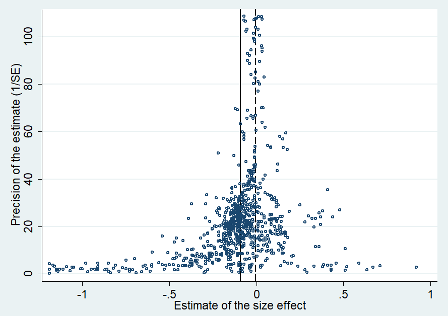

Abstract
A prominent factor used in most models predicting stock returns is firm size. Yet no consensus has emerged on the magnitude and stability of the size premium, with some researchers even questioning the usefulness of the factor. To take stock of the voluminous academic literature on the size premium, we collect 1,746 estimates of the effect of size on returns reported in 102 published studies and conduct the first meta-analysis on this topic. We find evidence of strong publication bias: researchers prefer to report estimates that are statistically significant and show a negative relation between size and returns, exaggerating the mean reported coefficient threefold. After correcting for the bias, we find that the literature suggests a size premium (the difference in annual stock returns on the smallest and largest capitalization quintile) of 1.72%. We also find that the premium was much larger prior to the publication of the first study on the topic. Moreover, we show that the intensity of publication bias has been decreasing over time.
Fig: Positive and insignificant estimates of the effect of size on returns are underreported
Reference: Anton Astakhov, Tomas Havranek, and Jiri Novak (2019), "Firm Size and Stock Returns: A Quantitative Survey." Journal of Economic Surveys 33(5), 1463-1492.